DTC P062D Fuel Injector Driver Circuit Performance Bank1 |
DTC P062E Fuel Injector Driver Circuit Performance Bank2 |
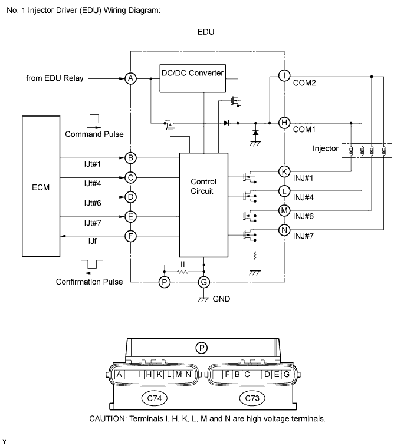
| DTC Detection Drive Pattern | DTC Detection Condition | Trouble Area |
| Idling for 10 seconds | Open or short in the No. 1 injector driver (EDU) or fuel injector circuit (1 trip detection logic). |
|
| DTC Detection Drive Pattern | DTC Detection Condition | Trouble Area |
| Idling for 10 seconds | Open or short in the No. 2 injector driver (EDU) or fuel injector circuit (1 trip detection logic). |
|
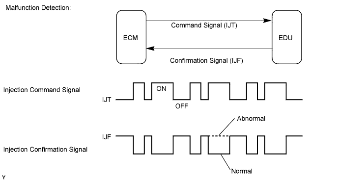
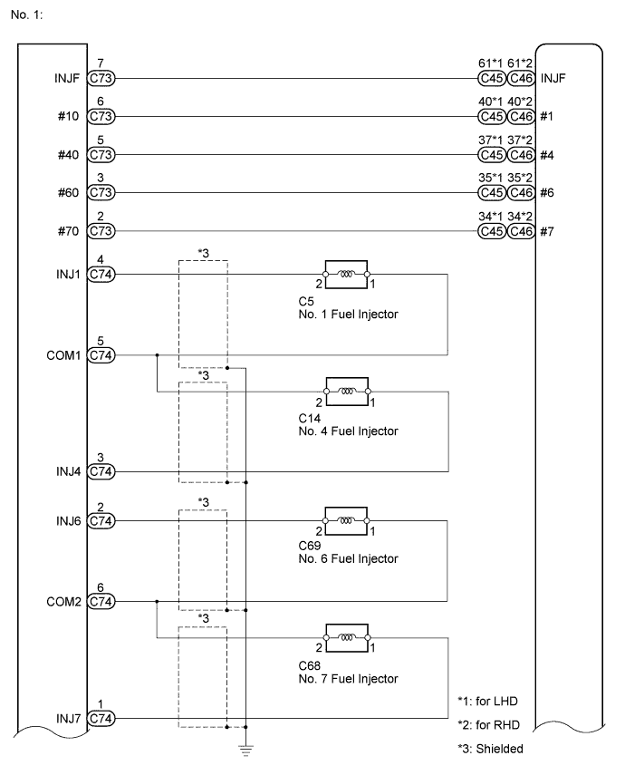
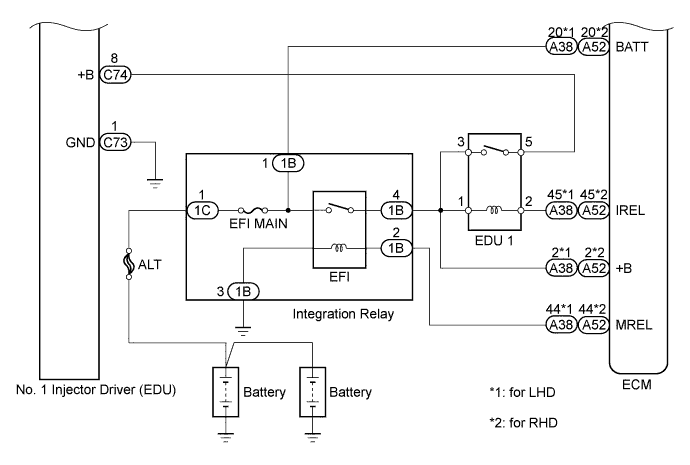
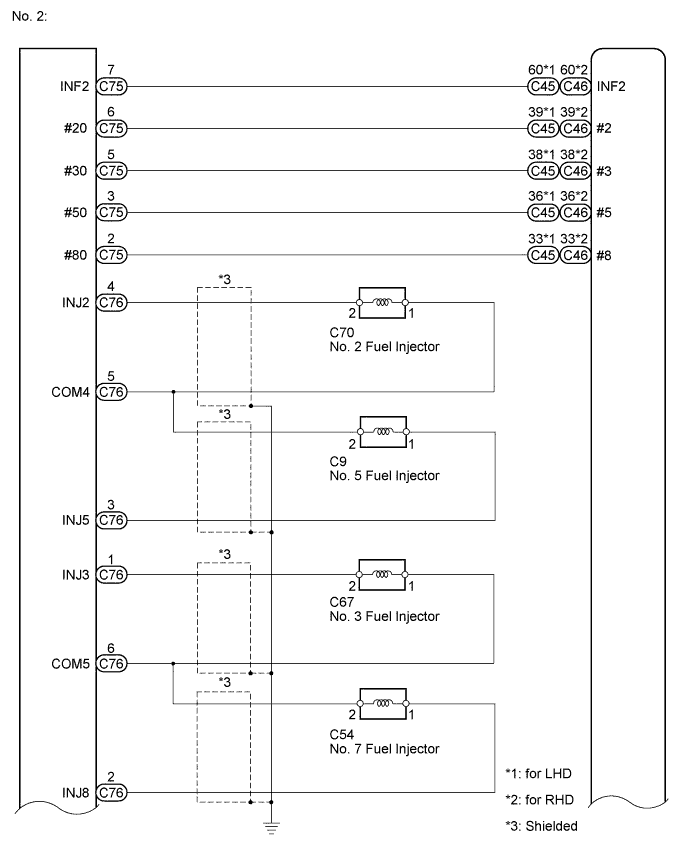
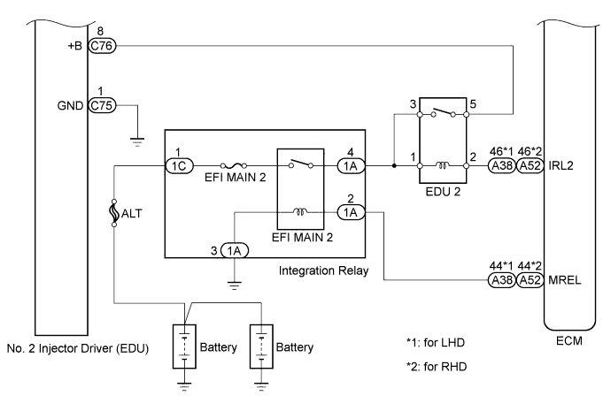
| 1.CHECK TERMINAL VOLTAGE EDU POWER SOURCE |
Disconnect the No. 1 injector driver (EDU) connectors.
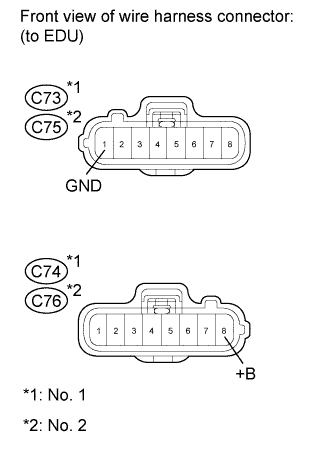 |
Disconnect the No. 2 injector driver (EDU) connectors.
Measure the voltage according to the value(s) in the table below.
| Tester Connection | Switch Condition | Specified Condition |
| C74-8 (+B) - C73-1 (GND) | Engine switch on (IG) | 11 to 14 V |
| Tester Connection | Switch Condition | Specified Condition |
| C76-8 (+B) - C75-1 (GND) | Engine switch on (IG) | 11 to 14 V |
|
| ||||
| OK | |
| 2.INSPECT INJECTOR DRIVER (No. 1 and No. 2) |
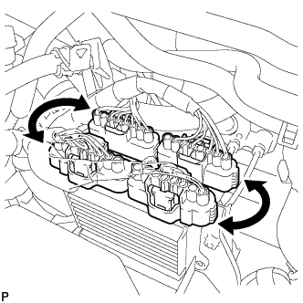 |
Interchange the No. 1 and No. 2 EDU connectors.
Connect the intelligent tester to the DLC3.
Turn the engine switch on (IG) and turn the tester on.
Clear the DTCs (Click here).
Start the engine.
Enter the following menus: Powertrain / Engine / DTC.
Read the DTCs.
| Result | Proceed to |
| DTCs do not change | A |
| DTCs change (change in malfunctioning cylinder or EDU code) | B |
|
| ||||
| A | |
| 3.INSPECT FUEL INJECTOR (RESISTANCE) |
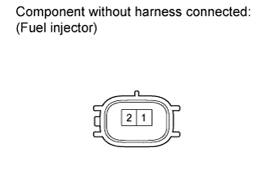 |
Disconnect the fuel injector connectors.
Measure the resistance according to the value(s) in the table below.
| Tester Connection | Condition | Specified Condition |
| 1 - 2 | 20°C (68°F) | 0.85 to 1.05 Ω |
|
| ||||
| OK | |
| 4.CHECK HARNESS AND CONNECTOR (FUEL INJECTOR - EDU) |
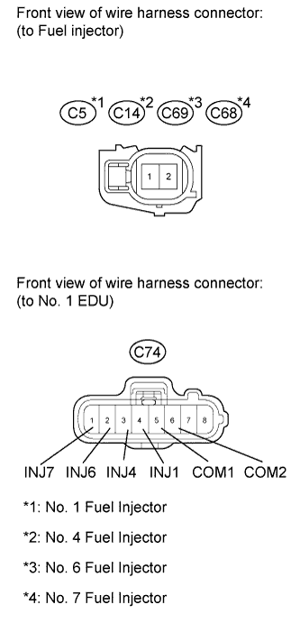 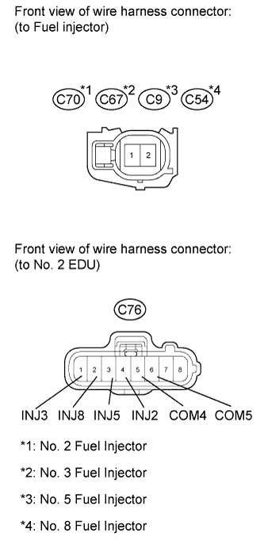 |
Disconnect the fuel injector connectors.
Disconnect the No. 1 EDU connector.
Measure the resistance according to the value(s) in the table below.
| Tester Connection | Condition | Specified Condition |
| C5-2 - C74-4 (INJ1) | Always | Below 1 Ω |
| C14-2 - C74-3 (INJ4) | Always | Below 1 Ω |
| C69-2 - C74-2 (INJ6) | Always | Below 1 Ω |
| C68-2 - C74-1 (INJ7) | Always | Below 1 Ω |
| C5-1 - C74-5 (COM1) | Always | Below 1 Ω |
| C14-1 - C74-5 (COM1) | Always | Below 1 Ω |
| C69-1 - C74-6 (COM2) | Always | Below 1 Ω |
| C68-1 - C74-6 (COM2) | Always | Below 1 Ω |
| Tester Connection | Condition | Specified Condition |
| C5-2 or C74-4 (INJ1) - Body ground | Always | 10 kΩ or higher |
| C14-2 or C74-3 (INJ4) - Body ground | Always | 10 kΩ or higher |
| C69-2 or C74-2 (INJ6) - Body ground | Always | 10 kΩ or higher |
| C68-2 or C74-1 (INJ7) - Body ground | Always | 10 kΩ or higher |
| C5-1 or C74-5 (COM1) - Body ground | Always | 10 kΩ or higher |
| C14-1 or C74-5 (COM1) - Body ground | Always | 10 kΩ or higher |
| C69-1 or C74-6 (COM2) - Body ground | Always | 10 kΩ or higher |
| C68-1 or C74-6 (COM2) - Body ground | Always | 10 kΩ or higher |
Disconnect the fuel injector connectors.
Disconnect the No. 2 EDU connector.
Measure the resistance according to the value(s) in the table below.
| Tester Connection | Condition | Specified Condition |
| C70-2 - C76-4 (INJ2) | Always | Below 1 Ω |
| C9-2 - C76-3 (INJ5) | Always | Below 1 Ω |
| C67-2 - C76-1 (INJ3) | Always | Below 1 Ω |
| C54-2 - C76-2 (INJ8) | Always | Below 1 Ω |
| C70-1 - C76-5 (COM4) | Always | Below 1 Ω |
| C9-1 - C76-5 (COM4) | Always | Below 1 Ω |
| C67-1 - C76-6 (COM5) | Always | Below 1 Ω |
| C54-1 - C76-6 (COM5) | Always | Below 1 Ω |
| Tester Connection | Condition | Specified Condition |
| C70-2 or C76-4 (INJ2) - Body ground | Always | 10 kΩ or higher |
| C9-2 or C76-3 (INJ5) - Body ground | Always | 10 kΩ or higher |
| C67-2 or C76-1 (INJ3) - Body ground | Always | 10 kΩ or higher |
| C54-2 or C76-2 (INJ8) - Body ground | Always | 10 kΩ or higher |
| C70-1 or C76-5 (COM4) - Body ground | Always | 10 kΩ or higher |
| C9-1 or C76-5 (COM4) - Body ground | Always | 10 kΩ or higher |
| C67-1 or C76-6 (COM5) - Body ground | Always | 10 kΩ or higher |
| C54-1 or C76-6 (COM5) - Body ground | Always | 10 kΩ or higher |
|
| ||||
| OK | |
| 5.CHECK HARNESS AND CONNECTOR (EDU - ECM) |
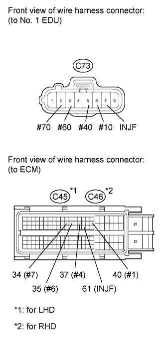 |
Disconnect the No. 1 EDU connector.
Disconnect the ECM connector.
Measure the resistance according to the value(s) in the table below.
| Tester Connection | Condition | Specified Condition |
| C73-6 (#10) - C45-40 (#1) | Always | Below 1 Ω |
| C73-5 (#40) - C45-37 (#4) | Always | Below 1 Ω |
| C73-3 (#60) - C45-35 (#6) | Always | Below 1 Ω |
| C73-2 (#70) - C45-34 (#7) | Always | Below 1 Ω |
| C73-7 (INJF) - C45-61 (INJF) | Always | Below 1 Ω |
| Tester Connection | Condition | Specified Condition |
| C73-6 (#10) - C46-40 (#1) | Always | Below 1 Ω |
| C73-5 (#40) - C46-37 (#4) | Always | Below 1 Ω |
| C73-3 (#60) - C46-35 (#6) | Always | Below 1 Ω |
| C73-2 (#70) - C46-34 (#7) | Always | Below 1 Ω |
| C73-7 (INJF) - C46-61 (INJF) | Always | Below 1 Ω |
| Tester Connection | Condition | Specified Condition |
| C73-6 (#10) or C45-40 (#1) - Body ground | Always | 10 kΩ or higher |
| C73-5 (#40) or C45-37 (#4) - Body ground | Always | 10 kΩ or higher |
| C73-3 (#60) or C45-35 (#6) - Body ground | Always | 10 kΩ or higher |
| C73-2 (#70) or C45-34 (#7) - Body ground | Always | 10 kΩ or higher |
| C73-7 (INJF) or C45-61 (INJF) - Body ground | Always | 10 kΩ or higher |
| Tester Connection | Condition | Specified Condition |
| C73-6 (#10) or C46-40 (#1) - Body ground | Always | 10 kΩ or higher |
| C73-5 (#40) or C46-37 (#4) - Body ground | Always | 10 kΩ or higher |
| C73-3 (#60) or C46-35 (#6) - Body ground | Always | 10 kΩ or higher |
| C73-2 (#70) or C46-34 (#7) - Body ground | Always | 10 kΩ or higher |
| C73-7 (INJF) or C46-61 (INJF) - Body ground | Always | 10 kΩ or higher |
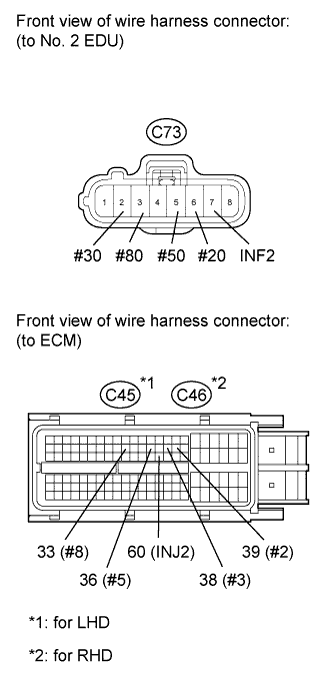 |
Disconnect the No. 2 EDU connector.
Disconnect the ECM connector.
Measure the resistance according to the value(s) in the table below.
| Tester Connection | Condition | Specified Condition |
| C75-6 (#20) - C45-39 (#2) | Always | Below 1 Ω |
| C75-2 (#30) - C45-38 (#3) | Always | Below 1 Ω |
| C75-5 (#50) - C45-36 (#5) | Always | Below 1 Ω |
| C75-3 (#80) - C45-33 (#8) | Always | Below 1 Ω |
| C75-7 (INF2) - C45-60 (INF2) | Always | Below 1 Ω |
| Tester Connection | Condition | Specified Condition |
| C75-6 (#20) - C46-39 (#2) | Always | Below 1 Ω |
| C75-2 (#30) - C46-38 (#3) | Always | Below 1 Ω |
| C75-5 (#50) - C46-36 (#5) | Always | Below 1 Ω |
| C75-3 (#80) - C46-33 (#8) | Always | Below 1 Ω |
| C75-7 (INF2) - C46-60 (INF2) | Always | Below 1 Ω |
| Tester Connection | Condition | Specified Condition |
| C75-6 (#20) or C45-39 (#2) - Body ground | Always | 10 kΩ or higher |
| C75-2 (#30) or C45-38 (#3) - Body ground | Always | 10 kΩ or higher |
| C75-5 (#50) or C45-36 (#5) - Body ground | Always | 10 kΩ or higher |
| C75-3 (#80) or C45-33 (#8) - Body ground | Always | 10 kΩ or higher |
| C75-7 (INF2) or C45-60 (INF2) - Body ground | Always | 10 kΩ or higher |
| Tester Connection | Condition | Specified Condition |
| C75-6 (#20) or C46-39 (#2) - Body ground | Always | 10 kΩ or higher |
| C75-2 (#30) or C46-38 (#3) - Body ground | Always | 10 kΩ or higher |
| C75-5 (#50) or C46-36 (#5) - Body ground | Always | 10 kΩ or higher |
| C75-3 (#80) or C46-33 (#8) - Body ground | Always | 10 kΩ or higher |
| C75-7 (INF2) or C46-60 (INF2) - Body ground | Always | 10 kΩ or higher |
|
| ||||
| OK | |
| 6.REPLACE ECM |
Replace the ECM (Click here).
|
| ||||
| 7.GO TO INJECTOR CIRCUIT |
Go to the injector circuit (Click here).
|
| ||||
| 8.REPLACE INJECTOR DRIVER (No. 1 or No. 2) |
Replace the injector driver (No. 1 or No. 2) (Click here).
|
| ||||
| 9.REPLACE FUEL INJECTOR |
Replace the fuel injector (Click here).
|
| ||||
| 10.REPAIR OR REPLACE HARNESS OR CONNECTOR |
| NEXT | |
| 11.CONFIRM WHETHER MALFUNCTION HAS BEEN SUCCESSFULLY REPAIRED |
Connect the intelligent tester to the DLC3.
Clear the DTCs (Click here).
Turn the engine switch off.
Start the engine and idle it for 10 seconds.
Enter the following menus: Powertrain / Engine / DTC.
Confirm that the DTC is not output again.
| NEXT | ||
| ||